승강기기사 (2018-04-28 기출문제)
1과목: 승강기 개론
1. 엘리베이터 메인 브레이크에 대한 설명 중 틀린 것은?
- 브레이크 라이닝은 불연성이어야 한다.
- 브레이크에 공급되는 전류는 2개 이상의 독립적인 전기장치에 의해 차단되어야 한다.
- 카의 정격속도로 정격하중의 125%를 싣고 하강방향으로 운행될 때 구동기를 정지할 수 있어야 한다.
- 브레이크 코일에 전류가 공급되면 제동력이 발생한다.
(정답률: 61%)

2. 그림과 같은 유압회로의 설명이 아닌 것은?
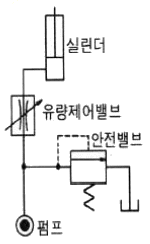
- 효율이 비교적 좋다.
- 정확한 제어가 가능하다.
- 미터인(METER-IN)회로이다.
- 펌프와 실린더 사이에 유량제어밸브를 삽입하여 직접 제어하는 방식이다.
(정답률: 78%)
3. 유압엘리베이터에 대한 설명으로 틀린 것은?
- 건물의 높이와 속도에 한계가 있다.
- 초고속 엘리베이터에 주로 사용된다.
- 하강 시에는 펌프를 구동시키지 않고 밸브만 제어하여 하강시킨다.
- 모터로 유압펌프를 구동시켜 압력을 가진 오일이 플런저를 밀어 올려 카를 상승시킨다.
(정답률: 87%)
4. 사이리스터를 이용한 직류제어방식은?
- 워드 레오나드 방식
- 정지 레오나드 방식
- 교류 2단 속도제어방식
- 가변전압가변주파수 제어방식
(정답률: 74%)
5. 엘리베이터의 조속기 로프는 어디에 고정시켜야 하는가?
- 주로프(Main Rope)
- 카 프레임(Car Frame)
- 카의 상단 빔(Car Top Beam)
- 비상정지장치 암(Safety Device Arm)
(정답률: 76%)
6. 기어드(Geared)형 권상기에서 엘리베이터의 속도를 결정하는 요소가 아닌 것은?
- 시브의 직경
- 로프의 직경
- 기어의 감속비
- 권상모터의 회전수
(정답률: 79%)
7. 직접식 유압엘리베이터에 대한 설명 중 틀린 것은?
- 부하에 의한 카 바닥의 빠짐이 적다.
- 실린더를 설치하기 위한 보호관을 지중에 설치하여야 한다.
- 승강로 소요평면 치수가 작고 구조가 간단하다.
- 비상정지장치가 필요하다.
(정답률: 65%)
8. 승강장 출입구 바닥 앞부분과 카바닥 앞부분과의 틈새 너비가 35mm이하이어야 한다. 이 기준을 적용하지 않는 엘리베이터의 종류는?
- 전망용
- 병원용
- 비상용
- 장애인용
(정답률: 82%)
9. 로핑 방법 중 로프에 걸리는 장력이 가장 적은 것은?
- 1:1
- 2:1
- 3:1
- 4:1
(정답률: 81%)
10. 다음 ( ) 안에 들어갈 내용으로 옳은 것은?
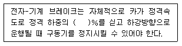
- 165
- 145
- 135
- 125
(정답률: 84%)
11. VVVF 제어방식의 설명으로 틀린 것은?
- 교류에서 직류로 변경되는 컨버터는 주로 사이리스터를 사용한다.
- 직류에서 교류로 변경되는 인버터에는 주로 트랜지스터 또는 IGBT가 사용된다.
- 발생하는 회생전력은 모두 저항을 통하여 열로 소비한다.
- 유도전동기에 인가되는 전압과 주파수를 동시에 변환하는 방식이다.
(정답률: 64%)
12. 도어머신에 대한 설명 중 틀린 것은?
- 작동이 원활하고 소음이 없어야 한다.
- 작동회수는 엘리베이터 기동회수의 2배 정도이므로 보수가 쉬워야 한다.
- 감속장치는 기어에 의한 방식 이외에 벨트나 체인에 의한 방식도 사용되고 있다.
- 보수를 용이하게 하기 위해 DC모터를 사용한다.
(정답률: 79%)
13. 엘리베이터용 트랙션 권상기에 대한 설명 중 틀린 것은?
- 헬리컬기어드 권상기는 웜기어에 비해 효율이 높다.
- 웜기어 권상기는 소음이 작다.
- 로프의 권부각이 크면 미끄러지기 쉽다.
- 주로프에 사용되는 도르래의 피치지름은 로프지름의 40배 이상으로 한다.
(정답률: 77%)
14. 다음 승강기방식 중 유압식이 아닌 것은?
- 스크류식
- 팬터그래프식
- 간접식
- 직접식
(정답률: 73%)
15. 에스컬레이터 적재하중을 산출하는데 필요한 사항이 아닌 것은?
- 층고
- 반력점간거리
- 디딤판(스텝)의 폭
- 디딤판(스텝)의 수평 투영 단면적
(정답률: 71%)
16. 기계실의 구조에 대한 설명으로 틀린 것은?(관련 규정 개정전 문제로 여기서는 기존 정답인 2번을 누르면 정답 처리됩니다. 자세한 내용은 해설을 참고하세요.)
- 기계실은 건축물의 타부분으로부터 출입문으로 격리되어야 한다.
- 기계실의 위치는 항상 승강로의 최상부 쪽에 설치되어야만 한다.
- 기계실의 작업구역 유효높이는 2m이상이어야 한다.
- 기계실의 기둥, 벽, 천장은 기기의 보수 및 수리를 위하여 기기와 일정 거리 이상을 두도록 한다.
(정답률: 76%)
17. 록다운 비상정지장치에 대한 설명 중 틀린 것은?(관련 규정 개정전 문제로 여기서는 기존 정답인 4번을 누르면 정답 처리됩니다. 자세한 내용은 해설을 참고하세요.)
- 240 m/min 이상에 적용된다.
- 순간정지식 비상정지장치이다.
- 록다운 비상정지장치의 동작을 감지하는 스위치가 있어야 한다.
- 이 장치를 설치하면 균형추측의 직하부의 피트바닥을 두껍게 하지 않아도 된다.
(정답률: 67%)
18. 권상기에서 구동 도르래(sheave)의 유효지름은 주로프 지름의 몇 배 이상이어야 하는가?
- 10
- 20
- 30
- 40
(정답률: 84%)
19. 엘리베이터에 사용되는 인터폰에 관한 설명으로 틀린 것은?
- 전원은 충전용 배터리를 사용한다.
- 카의 조작반과 기계실이나 관리실 간에 설치한다.
- 비상 시 방재센터, 기계실 및 관리실에서 안내방송으로 사용된다.
- 관리실 등에서 인터폰을 받지 않으면 외부로 자동 통화연결 되어야 한다.
(정답률: 65%)
20. 승강기의 카와 균형추를 로프로 감는 방법 중 더블랩을 사용하는 승강기는?
- 저속 화물용 엘리베이터
- 중속 승객용 엘리베이터
- 고속 승객용 엘리베이터
- 저속 승객용 엘리베이터
(정답률: 72%)
2과목: 승강기 설계
21. 1대의 승강기 조작방식에서 자동운전방식이 아닌 것은?
- 단식자동식
- 군 관리방식
- 승합전자동식
- 하향승합자동방식
(정답률: 69%)
22. 비상용엘리베이터에 대한 요건이 아닌 것은? (문제 오류로 실제 시험에서는 2, 3번이 정답처리 되었습니다. 여기서는 2번을 누르면 정답 처리 됩니다.)
- 비상용엘리베이터는 모든 승강장문 전면에 방화구획된 로비를 포함한 승강로 내에 설치 되어야 한다.
- 비상용엘리베이터의 보조 전원공급장치는 방화구획 밖에 설치하여야 한다.
- 비상용엘리베이터는 소방운전 시 모든 승강장 출입구마다 정지하여야 한다.
- 비상용엘리베이터의 운행속도는 1m/s 이상이어야 한다.
(정답률: 71%)
23. 엘리베이터 로프의 안전율(S)을 산출하는 식으로 옳은 것은? (단, K : 초핑계수, N : 로프 본수, P : 로프 1본당 와이어로프의 절단하중(kg), W : 적재하중(kg), Wc : 카 자중(kg), Wr : 로프자중(kg) 이다. )(오류 신고가 접수된 문제입니다. 반드시 정답과 해설을 확인하시기 바랍니다.)
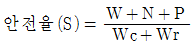
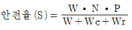
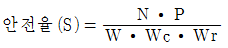
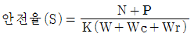
(정답률: 66%)
24. 전기식 엘리베이터에서 피트 바닥은 전부하 상태의 카가 완충기에 작용하였을 때 완충기 지지대 아래에 부과되는 정하중의 몇 배를 지지할 수 있어야 하는가?
- 1~2
- 2~3
- 2.1~3.1
- 2.5~4
(정답률: 65%)
25. 전동기의 효율에 관한 식으로 옳은 것은?
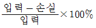
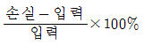
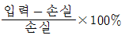
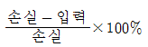
(정답률: 77%)
26. 동기 기어리스 권상기를 설계하려고 한다. 주 도르래의 직경을 작게 설계한 경우에 대한 설명으로 틀린 것은?
- 소형화가 가능하다.
- 회전수가 빨라진다.
- 브레이크 제동 토크가 커진다.
- 주로프의 지름이 작아질 수 있다.
(정답률: 73%)
27. 도어클로저의 방식 중 레버시스템과 코일스프링 및 도어체크를 조합한 방식은?
- 레버 클로저 방식
- 와이어 클로저 방식
- 웨이트 클로저 방식
- 스프링 클로저 방식
(정답률: 64%)
28. 유입식 완충기를 설계할 때 고려하여야 할 사항으로 옳은 것은?
- 재료의 안전율은 5cm 당 20% 이상의 신율을 갖는 재료에서는 2 이상이어야 한다.
- 플런저를 완전히 압축한 상태에서 완전 복구할 때 까지 소요하는 시간은 30초 이내여야 한다.
- 카의 정격하중을 싣고 정격속도의 115%의 속도로 자유낙하하여 카가 완충기에 충돌할 때의 평균 감속도는 1gn 이하여야 한다.
- 강도는 최대적용중량의 85% 중량으로 비상정지장치의 동작속도로 충격시킬 경우 완충기에 이상이 없어야 하며, 플런저는 완전복귀해야 한다.
(정답률: 76%)
29. 카틀 높이가 3.4m 꼭대기틈새가 1.4m, 기계실높이가 2.0m 출입구높이가 2.1m 인 승객용 엘리베이터 오버헤드(OH)는 몇 m 인가?
- 5.4
- 5.5
- 4.8
- 3.4
(정답률: 70%)
30. 후크의 법칙과 관련하여 관계식 E=σ/ε 에 대한 설명으로 틀린 것은?
- σ는 응력이다.
- ε는 변형율이다.
- E는 횡탄성계수이다.
- σ는 하중을 단면적으로 나눈 것이다.
(정답률: 72%)
31. 트랙션비(Traction ratio)에 대한 설명으로 틀린 것은?
- 트랙션비의 값이 낮아질수록 트랙선 능력은 좋아진다.
- 트랙션비의 값이 커질수록 전동기의 출력은 낮아질 수 있다.
- 카측 로프가 매달고 있는 중량과 균형추측 로프가 매달고 있는 중량의 비를 말한다.
- 트랙션비의 계산 시는 적재하중, 카 자중, 로프 중량, 오버밸런스율 등을 고려하여야 한다.
(정답률: 68%)
32. 전기식 엘리베이터에서 주로프에 관한 설명으로 틀린 것은?
- 직경은 항상 공칭지름이 12mm 이상이어야 한다.
- 카 1대에 대하여 3본(권동식의 경우 2본)이상이어야 한다.
- 주로프의 안전율이 12 이상이어야 한다.
- 끝부분은 1본마다 로프소켓에 바빗트 채움을 하거나 체결식 로프소켓을 사용하여 고정하여야 한다.
(정답률: 64%)
33. 공동주택(아파트)의 평균 운전간격은 몇 초(sec)가 적합한가?
- 60~90
- 45~60
- 35~45
- 15~30
(정답률: 59%)
34. 베어링 메탈 재료의 구비조건으로 틀린 것은?
- 열전도가 잘 되어야 한다.
- 축과의 마찰계수가 작아야 한다.
- 축보다 단단한 강도를 가져야 한다.
- 제작이 용이하고 내부식성이 있어야 한다.
(정답률: 60%)
35. P10-co-150 지상 15층 규모 사무실 건물에 엘리베이터의 전 예상 정지수는?
- 5.3
- 5.8
- 6.3
- 6.8
(정답률: 34%)
36. 승객용 엘리베이터의 카측에 사용할 수 있는 가이드 레일의 최소 크기는?
- 1K
- 3K
- 5K
- 8K
(정답률: 68%)
37. 그림은 승각기 권상 시브의 언더컷 홈 모양이다. 홈의 갂인 면 a의 값을 구하는 식으로 옳은 것은?
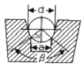
- 2a = d x sinβ
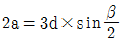
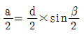
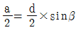
(정답률: 62%)
38. 비상용엘리베이터의 설계 시 고려해야할 사항으로 틀린 것은?
- 전선관, 박스 등은 물이 잠기지 않는 구조로 한다.
- 카 위의 각 전기장치에는 방적 카바, 물빼기 구멍 등을 설치한다.
- 승강장에서 카를 부르는 장치는 반드시 피난층에만 설치하여야 한다.
- 동일한 승강로 내에 다른 엘리베이터가 있다면 전체적인 공용 승강로는 비상용엘리베이터의 내화규정을 만족하여야 한다.
(정답률: 72%)
39. 일반적으로 사용하는 가이드레일의 허용응력으로 가장 적합한 것은?
- 1200 kg/cm2
- 2400 kg/cm2
- 3600 kg/cm2
- 4800 kg/cm2
(정답률: 66%)
40. 스프링 복귀식 유입완충기를 정격속도 90m/min의 승강기에 사용하여 성능시험을 실시하였을 때 완충기의 평균 감속도는 약 몇 gn 인가? (단, 완충기가 동작한 시간은 0.3sec, 조속기의 트립 속도는 정격속도의 1,4배이다.)
- 0.487
- 0.714
- 0.687
- 0.887
(정답률: 60%)
3과목: 일반기계공학
41. 원형축이 비틀림을 받고 있을 때 최대전단응력(τmax)과 축의 지름(d)과의 관계는?
- τmax ∝ d2
- τmax ∝ d3
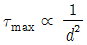
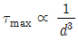
(정답률: 48%)
42. 표면경화법에서 질화법의 특징으로 틀린 것은?
- 경화층은 얇지만 경도가 높다.
- 마모 및 부식에 대한 저항이 작다.
- 담금질할 필요가 없고 변형이 작다.
- 600℃이하에서는 경도 감소 및 산화가 일어나지 않는다.
(정답률: 46%)
43. 용적형 펌프 중 정 토출량 및 가변 토출량으로서 공작기계, 프레스기계 등의 산업기계장치 도는 차량용에 널리 쓰이는 유압펌프는?
- 베인 펌프
- 원심 펌프
- 축류 펌프
- 혼유형 펌프
(정답률: 55%)
44. 물체를 달아 올리기 위해 훅(hook) 등을 걸 수 있는 볼트는?
- T홈 볼트
- 나비 볼트
- 기초 볼트
- 아이 볼트
(정답률: 69%)
45. 프레스 가공에서 드로잉한 제품의 플랜지를 소정의 형상이나 치수로 절단하는 가공법은?
- 펀칭
- 블랭킹
- 트리밍
- 셰이빙
(정답률: 53%)
46. 다음 중 스프링의 일반적인 용도로 가장 거리가 먼 것은?
- 하중 및 힘의 측정에 사용한다.
- 진동 또는 충격에너지를 흡수한다.
- 운동에너지를 열에너지로 소비한다.
- 에너지를 저축하여 놓고 이것을 동력원으로 사용한다.
(정답률: 72%)
47. 다음 중 버니어캘리퍼스로 측정할 수 없는 것은?
- 구멍의 내경
- 구멍의 깊이
- 축의 편심량
- 공작물의 두께
(정답률: 67%)
48. 직경 600mm, 800rpm으로 회전하는 원통마찰차로서 12.5kW를 전달시키는 힘은 약 몇 N인가? (단, 마찰계수 μ=0.2)로 한다.)
- 1832
- 2488
- 4984
- 1246
(정답률: 33%)
49. 다음 중 유압 및 공기압 용어에서 의미하는 표준상태는?
- 온도 0℃, 절대압 1.332kPa, 상대습도 50%인 공기상태
- 온도 0℃, 절대압 101.3kPa, 상대습도 65%인 공기상태
- 온도 10℃, 절대압 1.332kPa, 상대습도 50%인 공기상태
- 온도 20℃, 절대압 101.3kPa, 상대습도 65%인 공기상태
(정답률: 53%)
50. 다음 중 감마(γ)철에 탄소가 최대 2.11% 고용된 고용체로 면심입방격자의 결정구조를 가지고 있는 것은?
- 펄라이트
- 오스테나이트
- 마텐자이트
- 시멘타이트
(정답률: 56%)
51. 그림과 같이 균일 분포하중(q0)을 받고 왼쪽 끝은 고정, 오른쪽 끝은 단순 지지되어 있는 보의 A점에서의 반력은?
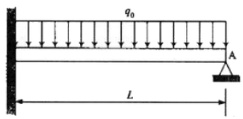
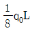
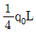
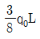
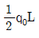
(정답률: 58%)
52. 관용 나사에서 유체의 누설을 막기 위해 지정하는 테이퍼 값은?
- 1/40
- 1/25
- 1/16
- 1/10
(정답률: 45%)
53. 다음 유압회로 명칭으로 옳은 것은?
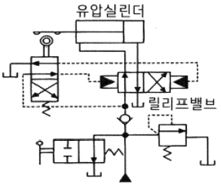
- 로크 회로
- 브레이크 회로
- 파일럿 조작회로
- 정토크 구동 회로
(정답률: 61%)
54. 외접 원통마찰차의 축간거리가 300 mm, 원동차의 회전수(N1)가 200 rpm, 종동차(N2)회전수가 100rpm 일 때 원동차의 지름(D1)과 종동차의 지름(D2)은 각각 몇 mm인가?
- D1 = 400, D2 = 200
- D1 = 200, D2 = 400
- D1 = 200, D2 = 100
- D1 = 100, D2 = 200
(정답률: 49%)
55. 봉이 인장하중을 받을 때, 탄성한도 영역 내에서 종변형률에 대한 횡변형률의 비는?
- 탄성한도
- 포와송 비
- 횡탄성 계수
- 체적탄성 계수
(정답률: 63%)
56. 취성재료에서 단순인장 또는 단순압축 하중에 대한 항복강도, 또는 인장강도나 압축강도에 도달하였을 때 재료의 파손이 일어난다는 이론은?
- 최대주응력설
- 최대전단응력설
- 최대주변형률설
- 변형률 에너지설
(정답률: 50%)
57. 주조품을 제조하기 위한 모형(pattern) 중 코어 모형을 사용해야 하는 주물로 적합한 것은?
- 골격형 주물
- 크기가 큰 주물
- 외형이 복잡한 주물
- 내부에 구멍이 있는 주물
(정답률: 61%)
58. 연삭숫돌을 구성하는 3요소가 아닌 것은?
- 조직
- 입자
- 기공
- 결합제
(정답률: 45%)
59. 산화알루미늄(Al2O3) 분말을 마그네슘, 규소 등의 산화물과 소량의 다른 원소를 첨가하여 소결한 절삭공구로 충격에는 약하나 고속절삭에서 우수한 성능을 나타내는 것은?
- 세라믹 공구
- 고속도강 공구
- 초경합금 공구
- 다이아몬드 공구
(정답률: 59%)
60. 산화철 분말과 알루미늄 분말을 혼합하여 연소시킬 때 발생하는 열에 의해 접합하는 용접은?
- 테르밋 용접
- 탄산가스 아크용접
- 원자수소 아크용접
- 불활성가스 금속 아크용접
(정답률: 60%)
4과목: 전기제어공학
61. 다음과 같은 회로에서 a, b 양단자 간의 합성저항은? (단, 그림에서의 저항의 단위는 [Ω]이다.)
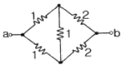
- 1.0[Ω]
- 1.5[Ω]
- 3.0[Ω]
- 6.0[Ω]
(정답률: 55%)
62. 다음 중 절연저항을 측정하는데 사용되는 계측기는?
- 메거
- 저항계
- 켈빈브리지
- 휘스톤브리지
(정답률: 62%)
63. 다음의 논리식을 간단히 한 것은?
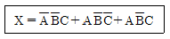
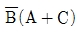
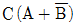
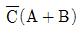
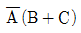
(정답률: 60%)
64. 직류기에서 전압정류의 역할을 하는 것은?
- 보극
- 보상권선
- 탄소브러시
- 리액턴스 코일
(정답률: 55%)
65. PLC프로그래밍에서 여러 개의 입력 신호 중 하나 도는 그 이상의 신호가 ON 되었을 때 출력이 나오는 회로는?
- OR회로
- AND회로
- NOT회로
- 자기유지회로
(정답률: 62%)
66. 다음 중 무인 엘리베이터의 자동제어로 가장 적합한 것은?
- 추종 제어
- 정치 제어
- 프로그램 제어
- 프로세스 제어
(정답률: 64%)
67. 단상변압기 2대를 사용하여 3상 전압을 얻고자 하는 결선방법은?
- Y결선
- V결선
- Δ결선
- Y-Δ결선
(정답률: 46%)
68. 그림과 같이 철심에 두 개의 코일 C1, C2를 감고 코일 C1에 흐르는 전류 I 에 △I 만큼의 변화를 주었다. 이 때 일어나는 현상에 관한 설명으로 옳지 않은 것은?
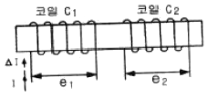
- 코일 C2에서 발생하는 기전력 e2는 렌츠의 법칙에 의하여 설명이 가능하다.
- 코일 C1에서 발생하는 기전력 e1은 자속의 시간 미분값과 코일의 감은 횟수의 곱에 비례한다.
- 전류의 변화는 자속의 변화를 일으키며, 자속의 변화는 코일 C1에 기전력 e1을 발생시킨다.
- 코일 C2에서 발생하는 기전력 e2와 전류 I 의 시간 미분값의 관계를 설명해 주는 것이 자기인덕턴스이다.
(정답률: 43%)
69. 100[V], 40[W]의 전구에 0.4[A]의 전류가 흐른다면 이 전구의 저항은?
- 100[Ω]
- 150[Ω]
- 200[Ω]
- 250[Ω]
(정답률: 50%)
70. 개루프 전달함수
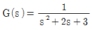
인 단위 궤환계에서 단위계단입력을 가하였을 때 의 오프셋(off set)은?- 0
- 0.25
- 0.5
- 0.75
(정답률: 35%)
71. 오차 발생시간과 오차의 크기로 둘러싸인 면적에 비례하여 동작하는 것은?
- P 동작
- I 동작
- D 동작
- PD 동작
(정답률: 35%)
72. 온도 보상용으로 사용되는 소자는?
- 서미스터
- 바리스터
- 제너다이오드
- 버랙터다이오드
(정답률: 55%)
73. 저항 8[Ω]과 유도리액턴스 6[Ω]이 직렬접속된 회로의 역률은?
- 0.6
- 0.8
- 0.9
- 1
(정답률: 51%)
74. 전동기 2차측에 기동저항기를 접속하고 비례 추이를 이용하여 기동하는 전동기는?
- 단상 유도전동기
- 2상 유도전동기
- 권선형 유도전동기
- 2중 농형 유도전동기
(정답률: 47%)
75. 온 오프(on-off) 동작에 관한 설명으로 옳은 것은?
- 응답속도는 빠르나 오프셋이 생긴다.
- 사이클링은 제거할 수 있으나 오프셋이 생긴다.
- 간단한 단속적 제어동작이고 사이클링이 생긴다.
- 오프셋은 없앨 수 있으나 응답시간이 늦어질 수 있다.
(정답률: 47%)
76. 물체의 위치, 방위, 자세 등의 기계적 변위를 제어량으로 하여 목표값의 임의의 변화에 항상 추종되도록 구성된 제어장치는?
- 서보기구
- 자동조정
- 정치제어
- 프로세스 제어
(정답률: 56%)
77. 검출용 스위치에 속하지 않는 것은?
- 광전스위치
- 액면스위치
- 리미트스위치
- 누름버튼스위치
(정답률: 54%)
78. 공작기계의 물품 가공을 위하여 주로 펄스를 이용한 프로그램 제어를 하는 것은?
- 수치 제어
- 속도 제어
- PLC 제어
- 계산기 제어
(정답률: 46%)
79. 그림과 같은 제어에 해당하는 것은?
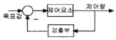
- 개방 제어
- 시퀀스 제어
- 개루프 제어
- 폐루프 제어
(정답률: 55%)
80. 다음과 같은 회로에서 i2가 0 이 되기 위한 C의 값은? (단, L은 합성인덕턴스, M은 상호인덕턴스이다.)
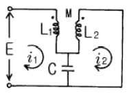
- 1/wL
- 1/w2L
- 1/wM
- 1/w2M
(정답률: 32%)